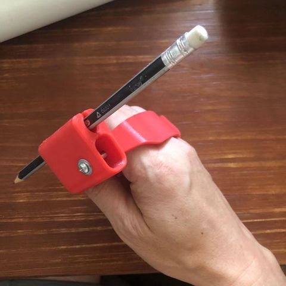
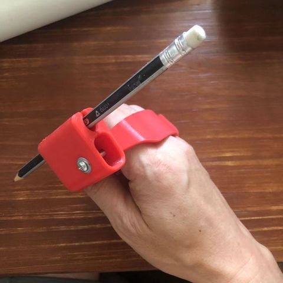

为帕金森人士设计的握勺器
为障碍人士设计的握勺器，可以3D打印，我用的是FDM打印机，文件来自https://www.thingiverse.com/，如果找不到at我，我找。 具有防抖动、可夹持铅笔、勺子功能。  本文来自https://www.playwithworld.org/
为障碍人士设计的握勺器，可以3D打印，我用的是FDM打印机，文件来自https://www.thingiverse.com/，如果找不到at我，我找。 具有防抖动、可夹持铅笔、勺子功能。  本文来自https://www.playwithworld.org/